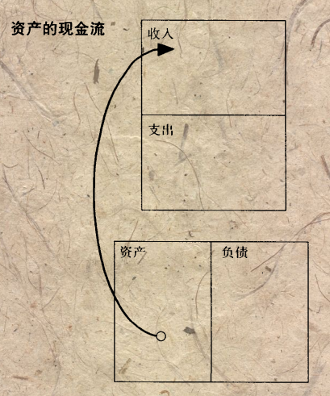
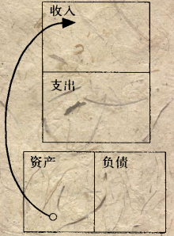
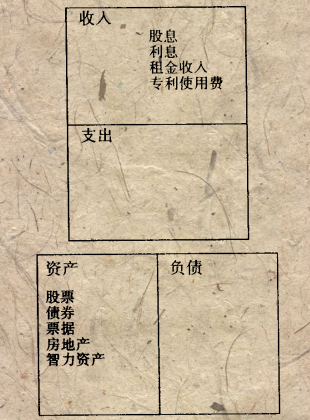
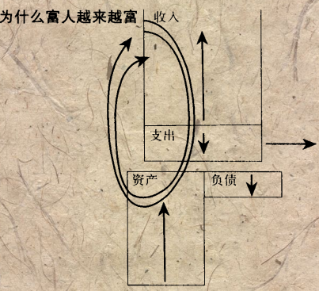
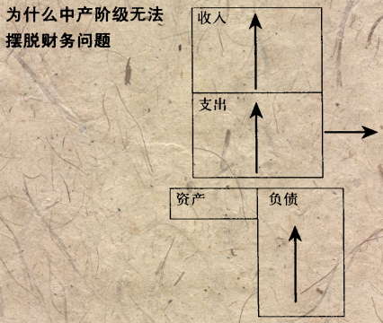
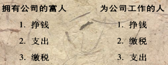
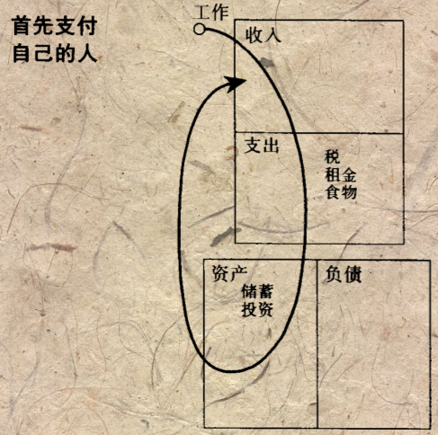

(In Chinese) 富爸爸穷爸爸-阅读摘抄
- 即使只是为了生存下去我们也需要提高自己的财商。
- 只有工作才能创造钱的思想是在财务上不成熟的人的思想
- 金钱是一种思想，要赚更多的钱，必须改变思想
Part 1: 课程
经常锻炼大脑
- 不能说“我可付不起”的话，要说“我怎样才能付得起呢？”
- 当遇到钱的问题时，
想办法解决而不是顺其自然
寻求完全的经济自立
如果能了解钱是如何运转的，你就有了驾驭它的力量，并开始积累财富。
第一课： 富人不为钱工作
穷人和中产阶级为钱而工作，富人让钱为他们工作
真正的学习需要精力，激情和热切的愿望
出于恐惧心，为了寻求稳定，多数人成了钱的奴隶，然后把怒气对准他们的老板
避开人一生中最大的陷阱
低端工作=陷阱
- 穷人为了一点点钱而勤奋工作，兼有一种有工作的
虚幻安全感. - 真实地看待你的感情，以你
喜欢的方式运用头脑和感情，而不是与自己作对. - 一份工作不能长期的解决经济问题。工作只是试图用
暂时的办法来解决长期的问题
感情与钱
- 要学会
支配钱，而不是害怕他 - 造成贫穷和财务问题的主要原因是
恐惧和无知，而非经济环境，政府或富人 - 要运用恐惧或贪婪为长期利益
牟利 - 人必须不停的与自己作斗争，通过
学习打开自己的心扉而不是封闭自己的头脑
学校毕业是继续学习的开端
- 让感情跟随
思想 -
自己赚钱而不是依赖雇主
第二课： 为什么教授财务知识
规则：必须明白负债和资产的区别，尽可能
购买资产
损益表

富人的现金流向图


独立思考
过大而时髦的房子可能成为负债
- 大多数人
一生都在为一所他们并未真正拥有的房子而辛苦的工作 - 总是要
先还清各期贷款后，才能以税后收入支付各种开支 -
财产税可能很高 - 将房子作为
主要资产反复进行投资，而不是投资于那些能带来收入的真正的资产上 - 最大的损失是
机会损失
结果: 1. 失去了用其他资产增值的时机 2. 本可以用来投资的资本将用于支付房子的各种高额，长期开支 3. 失去受教育的机会，不能成为‘成熟投资者’
富人的财务情况


因为普通中产阶级早年缺乏必要的财务知识，他们必须要回避风险， 而不是正确的去看待投资机会
普通中产阶级为雇主、股东工作，为政府工作，为银行工作
三个步骤
- 从资产项（而不是工资）得到的
现金流与支出等量(不依赖工资） - 把支出控制在资产所能够产生的现金流之下，从而使用多余现金
再投资 -
重复第2步这种再投资过程
富人
买入资产穷人只有支出 中产阶级买他们以为是资产的负债
第三课：关注自己的事业
存在财务问题的人经常是一生为别人工作的人
在拥有职业的同时应该拥有自己的事业
- 事业是围绕着你的
资产，而不是你的收入 - 只有把增加的收入用于购买
可产生收入的资产时，才能获得真正的财务安全
汽车并不是真正的资产
1 打下资产基础
- 支出稳定在
低水平 - 减少
借款 - 勤劳工作
2 获取真正的资产
- 不需要我到场就可以正常运作的
业务 - 股票
- 债券 4.共同基金
- 产生收入的房地产
- 票据（借据）
- 专利权， 如音乐，手稿，专利
- 其他有价值，可产生收入，或可能增值并有很好的流通市场的东西
富人最后才买奢侈品， 先建立资产
第四课： 税收的历史和公司的力量
富人并未被征税，而是中产阶级在为穷人支付税金
真正的资本家利用他们的财务知识逃避税收
公司
- 公司可以只是一些符合法律要求的
文件，在政府注册后就被放在了律师的办公室里 - 公司所得税率
低于个人收入所得税率 - 公司的某些支出可以在税前获得
抵减
吃亏的人一定是
无知者，他们不会用合理合法的避税手段，也不了解法律
钱越多，需要的知识也就越多
让钱为我工作而不是我为钱工作
- 精于
计算 - 了解
法律
财务的构成
-
会计- 财务知识 - 读懂财务报表 -
投资战略- 钱生钱的科学 - 投资与创造 -
了解市场- 供给与需求的科学 - 决定投资的意义 -
法律：税收优惠，在诉讼中获得保护

目标一： 拥有一个由自己资产组成的公司
第五课：富人的投资
过分的
畏惧和自我怀疑是浪费我们才能的最大因素
努力提高自己的财商
-
财商： 抓住机会，然后将机会转变成数以百万级的美元 - 富人更富有
创造性，愿意经过精心筹划后再去冒险 - 应用
财务智慧，创造性解决财务问题 - 不断学习和提高财商的原因是因为市场会有景气和萧条的交替，要
欢迎变化而不是沉溺于过去。
最重要的资产是头脑而不是金钱。如果受到良好训练，就可以迅速创造大量财富
开发理财天赋
有趣
- 如果投资机会太复杂而我不能弄明白，我就不会去投资
- 过于‘保险’的投资常常过于安全，太安全会导致低收益
越‘老练’就会得到越多的机会
- 如果你清楚自己在做什么，那就不是在赌博
- 如果把钱投入一笔交易然后只是祈祷，那就是在赌博
- 运用
知识来降低风险，减少意外的发生 - 财商可以提高
应付意外事件发生的能力
做创造投资机会的投资者
三种技能要求
- 如何寻找其他人都忽视的
机会- 买破房子并装修然后卖掉 - 如何
增加资金- 寻找不需要银行就能融资的方法 - 投资不是买入，而是一个收集信息的过程 - 如何
组织精明的人们
第六课：不要为金钱而工作
大部分人需要学习并掌握不止一项技能，才能是收入获得显著增长
富人能使自己活得更长一些，而贫穷的人只能早早死去
- 在寻找工作时要看看能从中
学到什么，而不是只看能挣到多少 - 要对人生有
长远的眼光，从长远看教育比金钱更有价值
要学习
- 要学习
营销技能，最好进入一家拥有连锁营销系统或称为多层次市场的公司 - 要研究一个企业
所有的部门，并对如何经营一家企业有一个整体的认识，能知道不同部门之间的相互关系
必要的管理素质
- 对
现金流的管理 - 对
系统（本人，时间和家庭）的管理 - 对
人员的管理 - 最重要：
销售与市场营销
销售与市场营销
- 如果过度依赖专业特长，可能会出现工资增长，但选择机会消失的情况
- 在处理
人际交往，商务谈判和控制被拒绝时的恐慌心理方面做得越好，生活就会越轻松。 - 成为好老师，好学生
目标二：学习销售饼提高处理人际关系的能力
Part2 : 开端
克服困难
不能拥有充足资产的五个原因
1. 恐惧心理 - 可能损失金钱
恐惧心理是正常的，每个人仍有机会变得富有
对于大多数人来说，他们在财务上不能获胜的原因是因为对他们而言损失金钱所造成的痛苦远远大于致富所带来的乐趣.
面对损失并将它变成盈利
要为了盈利而理财，而不是为了避免损失而理财
- 成功的投资者拥有
盈利的投资组合，而不是一个安全而平衡的投资组合 - 要
集中于一点，在这点上不断取得进展， 而不是‘分散风险’ 尽早起步
2. 顾虑与愤世嫉俗
- 不要总是对自己产生怀疑
- 不要让谣言和杞人忧天式的怀疑加剧我们的恐惧心理和对自己的疑虑
- 成功者
分析现实，分析使人心明眼亮 (在油价准备上涨时购买石油公司的股份)，失败者抱怨 - 注意能得到的
巨大收益，而不是细节上的麻烦 - 寻找好的
代管理者
避免‘买家反悔’心理，不要说‘我不想要’，把握实现财务自由的机会
3. 懒惰
- 忙碌的人常常是最懒惰的人
- 应该‘贪婪'一点，勇于追求并得到自己想要的生活
- 负罪感比欲望要糟
我怎样才能支付这个？
4. 不良习惯
1.先支付自己
2.思考如何赚到额外的钱支付政府的征税者
5. 自负
1.不要掩饰自己在某一方面欠缺知识
2.马上开始教育自己
Part3: 开始行动
第九章： 开始行动
十个步骤唤醒财务天赋
1 精神的力量
不想要一生都工作，想要金钱为我工作
2 每天作出自己的选择
- 选择自己的将来是
富裕、贫穷还是一般的机会 - 选择如何利用自己的
时间，金钱和知识实现目标 - 每天保持
学习 - 投资于
教育，首先投资与学习自己所要投资项目的有关知识 - 参加
检讨会/讲座，可能会花一些钱，但是能在将来获得回报。每年至少要参加两次这样的培训。 - 阅读或听有经验的人说过的话。不要放弃吸收更多新思想和可能性的机会，不要傲慢
- 以
长远眼光看待自己的财富，先教育自己
3 慎重的选择朋友
- 注意有钱的朋友是如何谈论
金钱的，向他们学习 - 注意贫穷的朋友是如何谈论金钱的，学到什么事情不能做
- 不要听
胆小的人说的话 - 要注意倾听双方的意见，保持开放的心态
-
坚持自己的选择，不盲目从众 - 群体可能会反应迟钝 - 精明的投资者不会抱怨市场机会不对，而是马上去寻找下一个机会
- 购买一项
不大流行的投资：盈利是在购买时就已获得，而不是在出售时获得的 - 寻找
内幕信息
4 掌握一种模式，然后再学习一种新的模式 - 快速学习
- 当一种赚钱方法不那么管用时，快速学习另一种新的
- 时间变化很快，所以必须快速学习
5 首先支付自己 - 自律

- 不能控制自己 = 不能致富。不要得到薪水之后立刻出去购买新车或乘船旅游
- 这是区分穷人和富人的首要因素
- 要自信，学会忍耐财务压力
-
在支付每月支出之前，先将钱安排在自己的资产项目上 -
需要胆量，不随大流
- 不要背上数额过大的债务包袱，保持自己的支出
低水平- 先增加
资产,再用资产中产生的现金流购买大房子或好车子
当资金短缺时，去承受外在压力
- 不要动用储蓄或投资
- 利用这种压力想办法挣更多的钱
- 致富并不以牺牲舒适生活为代价的支付账单
储蓄只能用于创造更多的钱，而不是用来支付账单
6 寻求好建议 - 厚待经纪人
- 给专业人士优厚的报酬 -
专业人才的服务会创造财富,节省时间 - 好的经纪人：
提供信息，花时间教育我 - 经纪人是我在市场上的
眼睛和耳朵 - 选择
称职的经纪人: 了解他们个人的财产和税收支付情况，保证我们感兴趣的领域一样 - 选择
对你的利益很关心的经纪人： 会教育你 - 加强人力管理技能
7 重视收回投资后的资产，而不仅仅是投资回报率
- 投入 -> 盈利 -> 收回， 不要担心之后的市场。 2.可能会损失资金，但确保我可以负担得起损失资金
- 明智的投资者看到一旦
收回投资后，因此所拥有的资产如同白得
8 集中资产
集中资源于资产项而不是负债项目
- 要拥有
控制金钱的意志 -
以钱生钱而不是随意购买奢侈品 - 用消费欲激发财务天赋去进行投资
- 不要借钱去获得想要的东西，而是把注意力集中在为自己创造金钱上
- 成为金钱的主人，不要用金钱的力量对付自己
9 选择心目中的英雄
-
阅读书籍，模仿这些富人，如特朗普，巴菲特，彼得林奇，索罗斯，罗杰斯 - 在交易时模仿他们的气势，行为，思考方式
10 给予外界
先予后给
- 在需要什么时，首先想到给予
- 例如在需要金钱时先给予别人金钱，然后为自己想要的东西付出成本
- 想一想自己心里到底需要什么，然后为此先付出
第十章：如何去做
行动者总会击败不行动者，现在就行动
1 先思考
-
评估一下正在做的的事哪些是有效的，哪些是无效的 - 找一些有效的事情去
做
2 寻找新的思想
- 去书店或上网寻找
新的投资理念/模式 行动起来
3 找一个做过你想做的事情的人共进午餐
- 向他/她
请教诀窍或做生意的技巧 行动起来
4 参加辅导班并购买相关磁带
- 可能会花费一些学习费用
-
值得。学习并行动
5 提出多份报价
在投资时：
- 选看
多数报价：没有人知道是么是‘恰当的价格’，除非有另一处同样的交易作为参照。 - 给出一个
一般性报价： 大部分的卖主要价过高
做买卖就是一场有趣的游戏 报价提出来，就会有人同意
使用‘回避条款’来做报价
在协议上加上‘需得到商业伙伴的同意’，然后利用这个来回避不需要的东西
不需要将买卖游戏搞得太复杂
6 到市场上去
一桩交易要获得盈利，必须具备两个条件：1.
廉价2.有变化只有存在变化时，才能使廉价交易变成有利可图的机会
- 不要一直坐在家里等电话
- 房地产：每月在有可能的地区慢跑，散步或驾车10来分钟，发现投资机会
- 注意观察，以及和附近的人交流
- 股票： 彼得林奇《称雄华尔街》
7 不要被打折或降价轻易吸引/吓到
- 消费时不要急于在降价时储货
- 股票下挫时不要轻易回调
8 关注适当的地方
- 注意关键盈利/亏损的
时间：不要白白等待（价格上涨/下跌） - 买下馅饼并把它切成小块：考虑
较大的生意。大部分人看到的都只是较小的东西 - 即使投资规模很小，也要考虑大生意
9 温故而知新
学习各种成功认识的案例，包括过去和现在的